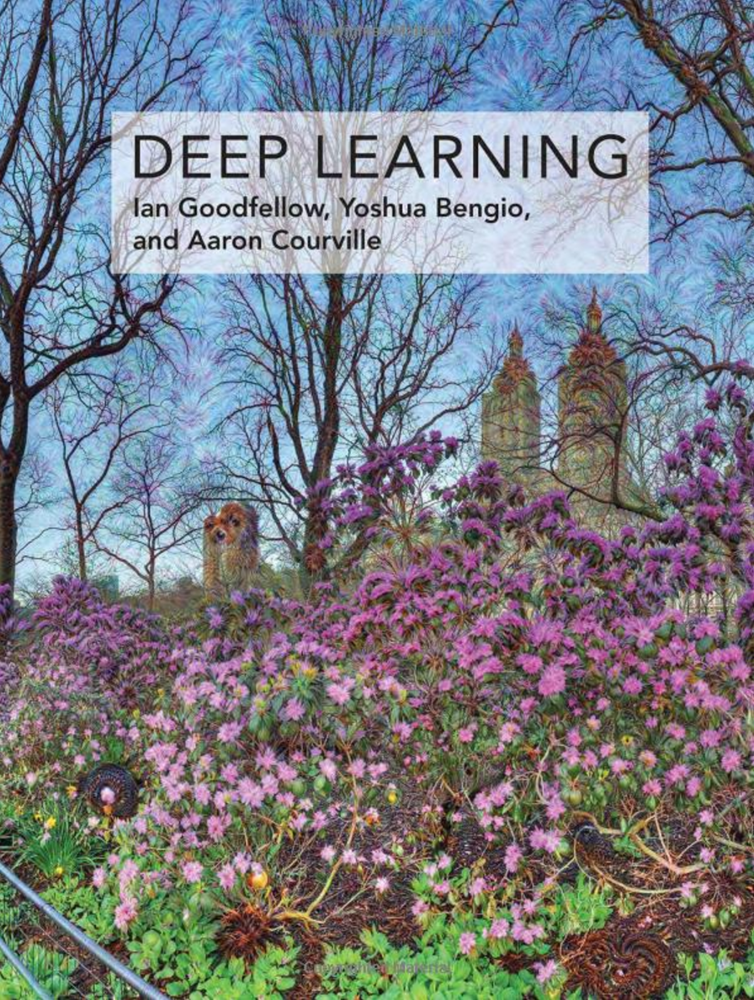
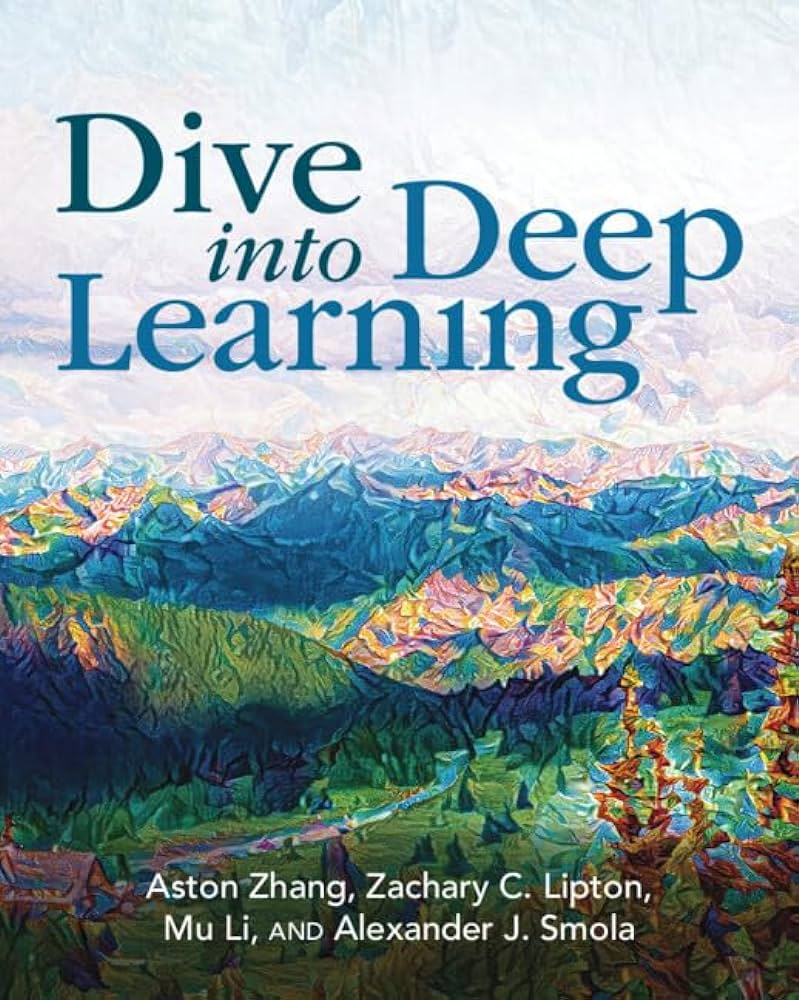

Modelos de Deep Learning
Descripción del curso
1 Objetivos del curso
2 Programa del curso
3 Procedimiento de evaluación
A lo largo del curso, los estudiantes desarrollarán un Proyecto aplicado utilizando los conocimientos adquiridos durante el curso. Los estudiantes seleccionarán un problema real para aplicar técnicas de Deep Learning, incluyendo el diseño e implementación de uno o varios modelos.
4 Asistencia
5 Bibliografía del curso
Los principales libros que usaremos, además de otros recursos online son los siguientes:


6 Referencias
Géron, Aurélien. 2022. Hands-on machine learning with Scikit-Learn, Keras, and TensorFlow. O’Reilly Media, Inc.
Goodfellow, Ian, Yoshua Bengio, y Aaron Courville. 2016. Deep learning. MIT press.
Raschka, Sebastian, y Vahid Mirjalili. 2019. Python machine learning: Machine learning and deep learning with Python, scikit-learn, and TensorFlow 2. Packt Publishing Ltd.
Zhang, Aston, Zachary C Lipton, Mu Li, y Alexander J Smola. 2023. Dive into deep learning. Cambridge University Press.